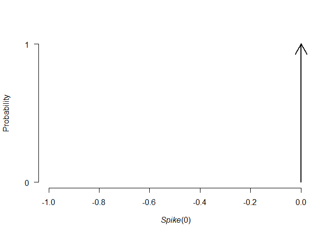
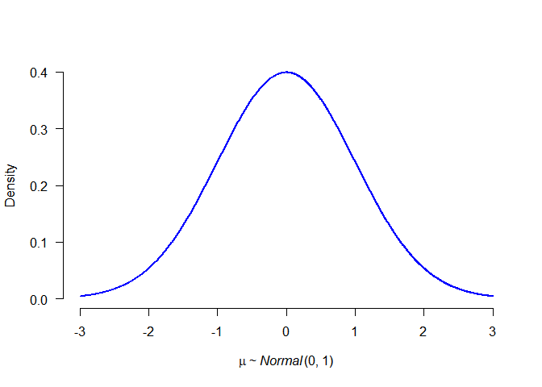
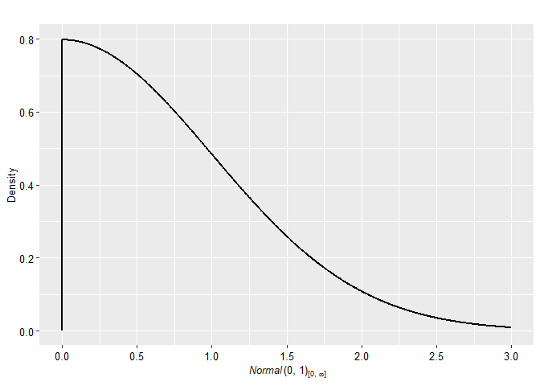
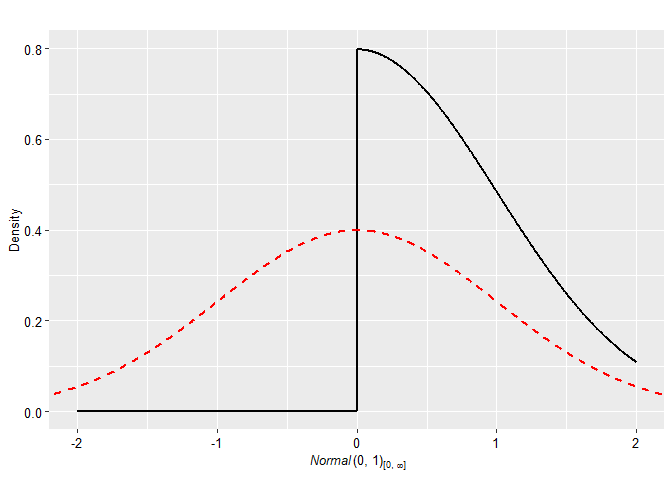
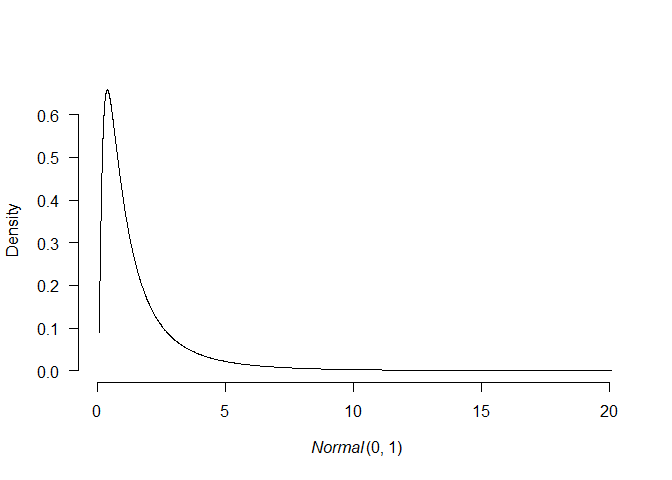
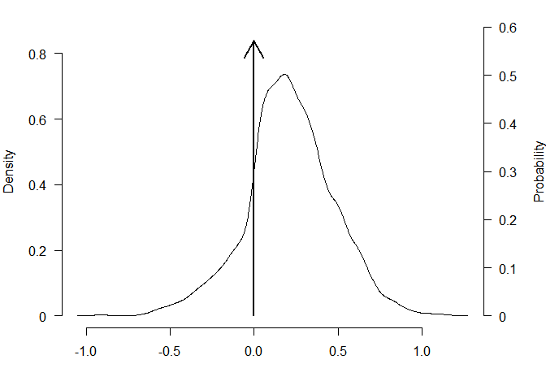
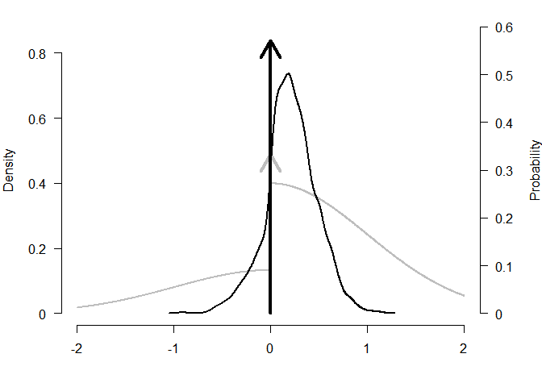
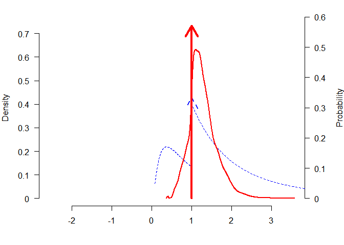
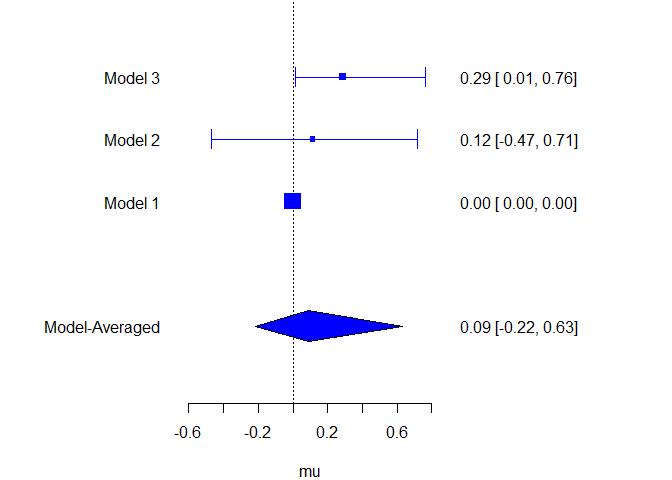
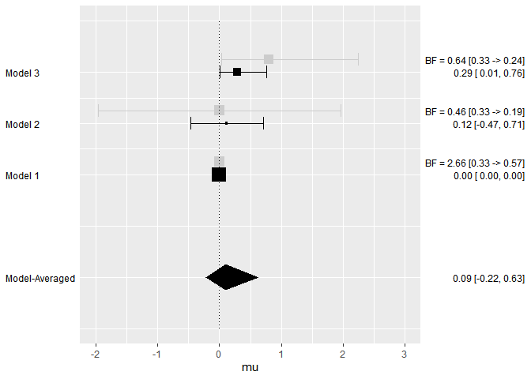

The goal of BayesTools is to provide functions that simplify building R packages focused on Bayesian inference and Bayesian model-averaging.
Currently, the package provides several tools:
- prior distribution (with S3 methods for plot/print/pdf/cdf/rng/…)
- JAGS models automation (generating JAGS model syntax and
bridgesamplingmarginal likelihood functions for prior distributions, various wrappers, …) - model-averaging (mixing posterior distributions, computing Bayes factors, generating summary tables, …)
Installation
You can install the released version of BayesTools from CRAN with:
install.packages("BayesTools")And the development version from GitHub with:
# install.packages("devtools")
devtools::install_github("FBartos/BayesTools")Prior Distributions
Prior distribution can be created with the prior function.
library(BayesTools)
#> Loading required namespace: runjags
#>
#> Attaching package: 'BayesTools'
#> The following objects are masked from 'package:stats':
#>
#> sd, var
#> The following object is masked from 'package:grDevices':
#>
#> pdf
p0 <- prior(distribution = "point", parameters = list(location = 0))
p1 <- prior(distribution = "normal", parameters = list(mean = 0, sd = 1))
p2 <- prior(distribution = "normal", parameters = list(mean = 0, sd = 1), truncation = list(0, Inf))The priors can be easily visualized with many possible arguments
plot(p0)

plot(p2, plot_type = "ggplot")
plot(p2, plot_type = "ggplot", xlim = c(-2, 2)) + geom_prior(p1, col = "red", lty = 2)
plot(p1, transformation = "exp")
All priors also contain some basic S3 methods.
# S3 methods
set.seed(1)
rng(p0, 10)
#> [1] 0 0 0 0 0 0 0 0 0 0
rng(p1, 10)
#> [1] -0.6264538 0.1836433 -0.8356286 1.5952808 0.3295078 -0.8204684
#> [7] 0.4874291 0.7383247 0.5757814 -0.3053884
rng(p2, 10)
#> [1] 0.38984324 1.12493092 0.94383621 0.82122120 0.59390132 0.91897737
#> [7] 0.78213630 0.07456498 0.61982575 0.41794156
pdf(p0, c(-1, 0, 1))
#> [1] 0 Inf 0
pdf(p1, c(-1, 0, 1))
#> [1] 0.2419707 0.3989423 0.2419707
pdf(p2, c(-1, 0, 1))
#> [1] 0.0000000 0.7978846 0.4839414
cdf(p0, c(-1, 0, 1))
#> [1] 0 1 1
cdf(p1, c(-1, 0, 1))
#> [1] 0.1586553 0.5000000 0.8413447
cdf(p2, c(-1, 0, 1))
#> [1] 0.0000000 0.0000000 0.6826895
mean(p0)
#> [1] 0
mean(p1)
#> [1] 0
mean(p2)
#> [1] 0.7978846
sd(p0)
#> [1] 0
sd(p1)
#> [1] 1
sd(p2)
#> [1] 0.6028103
print(p0)
#> Spike(0)
print(p1, short_name = TRUE)
#> N(0, 1)JAGS Automation
The packages simplifies development of JAGS models by automatically taking care of the prior distributions relevant portion of the code.
First, we generate few samples from a normal distribution and use the previously specified prior distributions as priors for the mean (passed with a list).
# get some data
set.seed(1)
data <- list(
x = rnorm(10),
N = 10
)
data$x
#> [1] -0.6264538 0.1836433 -0.8356286 1.5952808 0.3295078 -0.8204684
#> [7] 0.4874291 0.7383247 0.5757814 -0.3053884
## create and fit models
# define priors
priors_list0 <- list(mu = p0)
priors_list1 <- list(mu = p1)
priors_list2 <- list(mu = p2)We create a model_syntax that defines likelihood of the data for the JAGs model and fit the models with the JAGS_fit wrapper that automatically adds prior distributions to the syntax, generates starting values, creates list of monitored variables, and contains additional control options (most of the functionality is build upon runjags package).
# define likelihood for the data
model_syntax <-
"model{
for(i in 1:N){
x[i] ~ dnorm(mu, 1)
}
}"
# fit the models
fit0 <- JAGS_fit(model_syntax, data, priors_list0, seed = 0)
#> Loading required namespace: rjags
fit1 <- JAGS_fit(model_syntax, data, priors_list1, seed = 1)
fit2 <- JAGS_fit(model_syntax, data, priors_list2, seed = 2)The runjags_estimates_table function then provides a nicely formated summary for the fitted model.
# formatted summary tables
runjags_estimates_table(fit1, priors_list1)
#> Mean SD lCI Median uCI error(MCMC) error(MCMC)/SD ESS R-hat
#> mu 0.116 0.304 -0.469 0.117 0.715 0.00242 0.008 15748 1.000We create a log_posterior function that defines the log likelihood of the data for marginal likelihood estimation via bridgesampling (while creating a dummy bridge sampling object for the model without any posterior samples).
# define log posterior for bridge sampling
log_posterior <- function(parameters, data){
sum(dnorm(data$x, parameters$mu, 1, log = TRUE))
}
# get marginal likelihoods
marglik0 <- list(
logml = sum(dnorm(data$x, mean(p0), 1, log = TRUE))
)
class(marglik0) <- "bridge"
marglik1 <- JAGS_bridgesampling(fit1, data, priors_list1, log_posterior)
marglik2 <- JAGS_bridgesampling(fit2, data, priors_list2, log_posterior)
marglik1
#> Bridge sampling estimate of the log marginal likelihood: -13.1383
#> Estimate obtained in 4 iteration(s) via method "normal".Model-Averaging
The package also simplifies implementation of Bayesian model-averaging (see e.g., RoBMA package).
First, we create a list of model objects, each containing the JAGS fit, marginal likelihood, list of prior distribution, prior weights, and generated model summaries. Then we apply the models_inference automatically calculating basic model-averaging information. Finally, we can use model_summary_table to summarize the individual models.
## create an object with the models
models <- list(
list(fit = fit0, marglik = marglik0, priors = priors_list0, prior_weights = 1, fit_summary = runjags_estimates_table(fit0, priors_list0)),
list(fit = fit1, marglik = marglik1, priors = priors_list1, prior_weights = 1, fit_summary = runjags_estimates_table(fit1, priors_list1)),
list(fit = fit2, marglik = marglik2, priors = priors_list2, prior_weights = 1, fit_summary = runjags_estimates_table(fit2, priors_list2))
)
# compare and summarize the models
models <- models_inference(models)
# create model-summaries
model_summary_table(models[[1]])
#>
#> Model 1 Parameter prior distributions
#> Prior prob. 0.333
#> log(marglik) -12.02
#> Post. prob. 0.570
#> Inclusion BF 2.655
model_summary_table(models[[2]])
#>
#> Model 2 Parameter prior distributions
#> Prior prob. 0.333 mu ~ Normal(0, 1)
#> log(marglik) -13.14
#> Post. prob. 0.186
#> Inclusion BF 0.458
model_summary_table(models[[3]])
#>
#> Model 3 Parameter prior distributions
#> Prior prob. 0.333 mu ~ Normal(0, 1)[0, Inf]
#> log(marglik) -12.87
#> Post. prob. 0.243
#> Inclusion BF 0.644Moreover, we can draw inference based on the whole ensemble for the common parameters with the ensemble_inference function, or mixed the posterior distributions based on marginal likelihoods with the mix_posteriors functions. The various summary functions then create tables for the inference, estimates, model summary, and MCMC diagnostics.
## draw model based inference
inference <- ensemble_inference(model_list = models, parameters = "mu", is_null_list = list("mu" = 1))
# automatically mix posteriors
mixed_posteriors <- mix_posteriors(model_list = models, parameters = "mu", is_null_list = list("mu" = 1), seed = 1)
# summarizes the model-averaging summary
ensemble_inference_table(inference, parameters = "mu")
#> Models Prior prob. Post. prob. Inclusion BF
#> mu 2/3 0.667 0.430 0.377
ensemble_estimates_table(mixed_posteriors, parameters = "mu")
#> Mean Median 0.025 0.95
#> mu 0.091 0.000 -0.218 0.523
ensemble_summary_table(models, parameters = "mu")
#> Model Prior mu Prior prob. log(marglik) Post. prob. Inclusion BF
#> 1 0.333 -12.02 0.570 2.655
#> 2 Normal(0, 1) 0.333 -13.14 0.186 0.458
#> 3 Normal(0, 1)[0, Inf] 0.333 -12.87 0.243 0.644
ensemble_diagnostics_table(models, parameters = "mu", remove_spike_0 = FALSE)
#> Model Prior mu max[error(MCMC)] max[error(MCMC)/SD] min(ESS)
#> 1 Spike(0) NA NA NA
#> 2 Normal(0, 1) 0.00242 0.008 15748
#> 3 Normal(0, 1)[0, Inf] 0.00162 0.008 16078
#> max(R-hat)
#> NA
#> 1.000
#> 1.000The packages also provides functions for plotting model-averaged posterior distributions.
### plotting
oldpar <- graphics::par(no.readonly = TRUE)
on.exit(graphics::par(mar = oldpar[["mar"]]))
# plot model-average posteriors
par(mar = c(4, 4, 1, 4))
plot_posterior(mixed_posteriors, parameter = "mu")
plot_posterior(mixed_posteriors, parameter = "mu", lwd = 2, col = "black", prior = TRUE, dots_prior = list(col = "grey", lwd = 2), xlim = c(-2, 2))
plot_posterior(mixed_posteriors, parameter = "mu", transformation = "exp", lwd = 2, col = "red", prior = TRUE, dots_prior = list(col = "blue", lty = 2))
Or comparing estimates from the different models.
plot_models(model_list = models, samples = mixed_posteriors, inference = inference, parameter = "mu", col = "blue")
plot_models(model_list = models, samples = mixed_posteriors, inference = inference, parameter = "mu", prior = TRUE, plot_type = "ggplot")